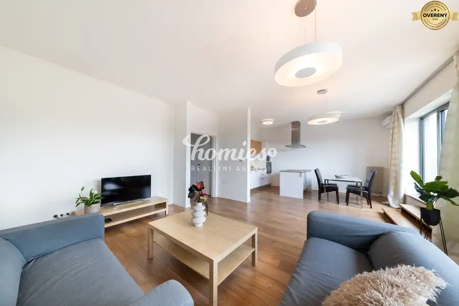
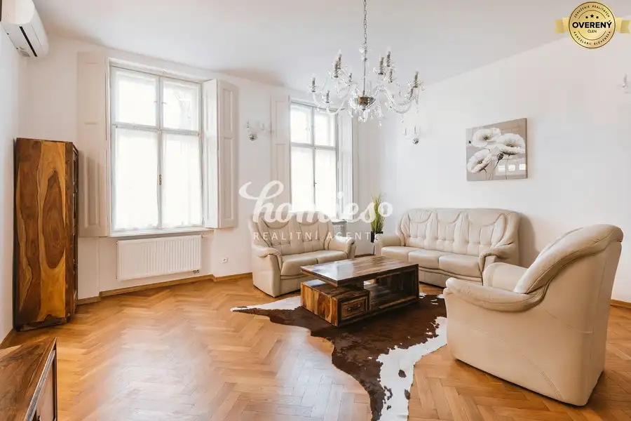
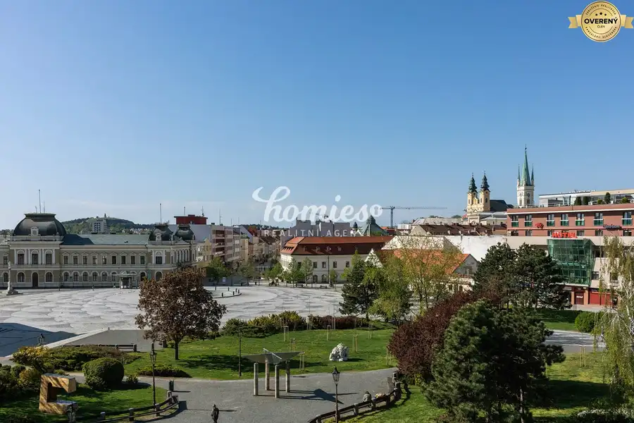
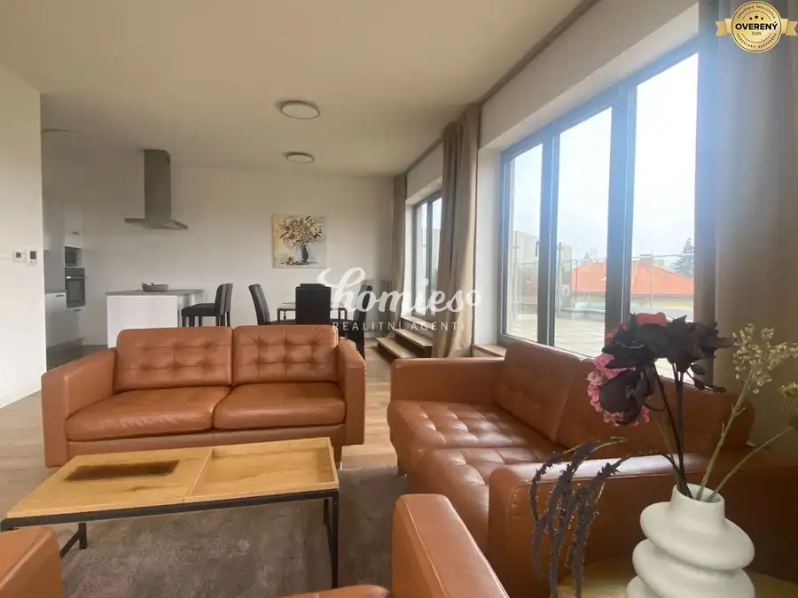
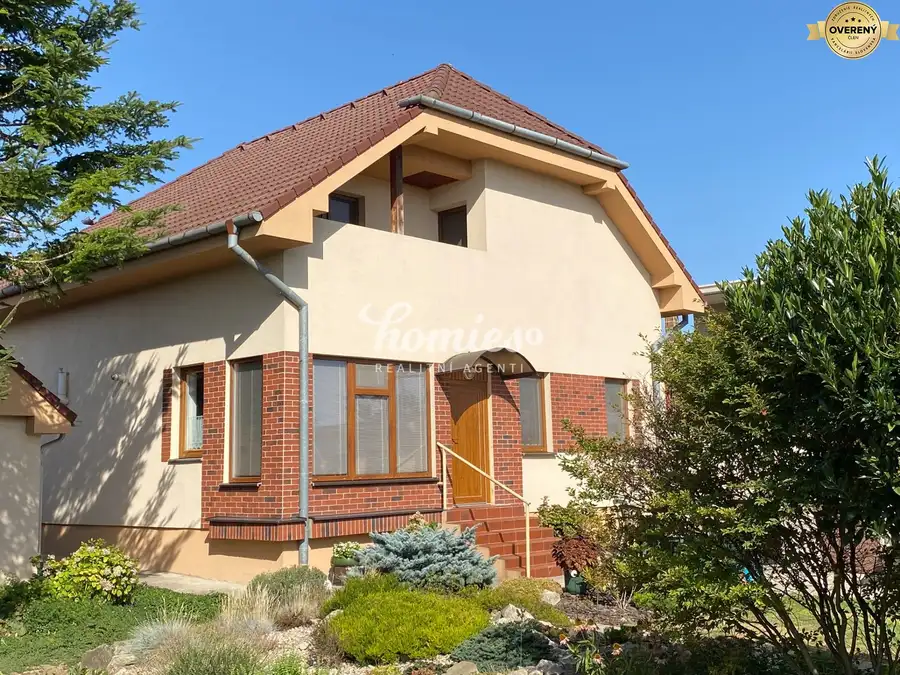
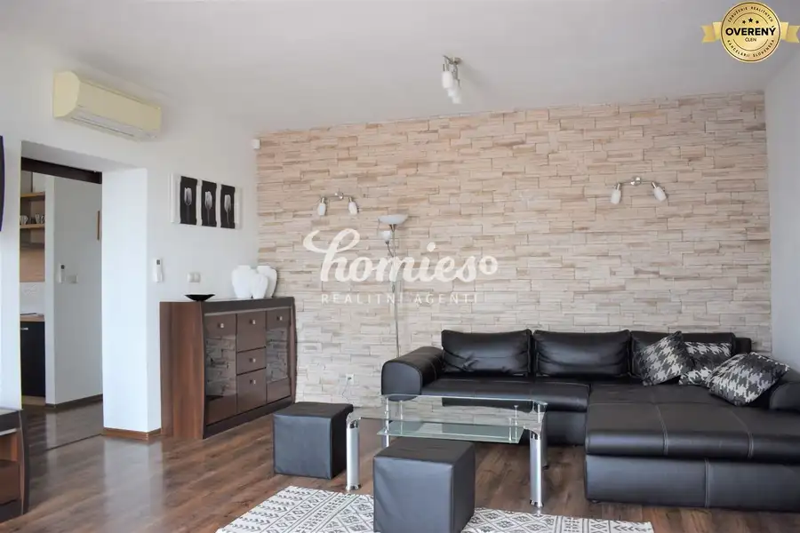
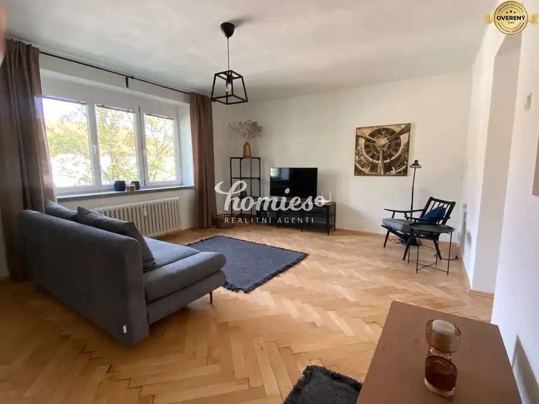
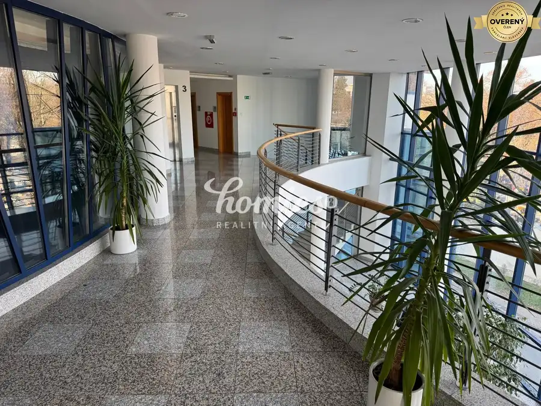
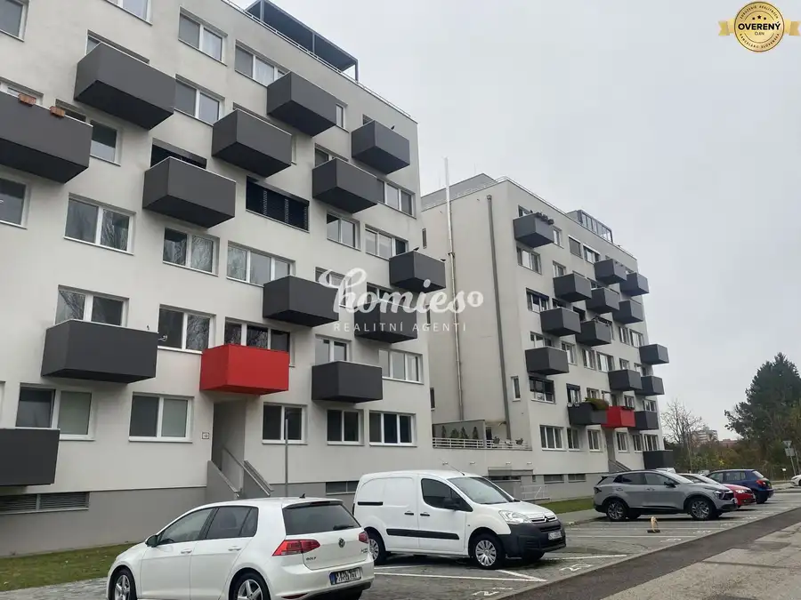
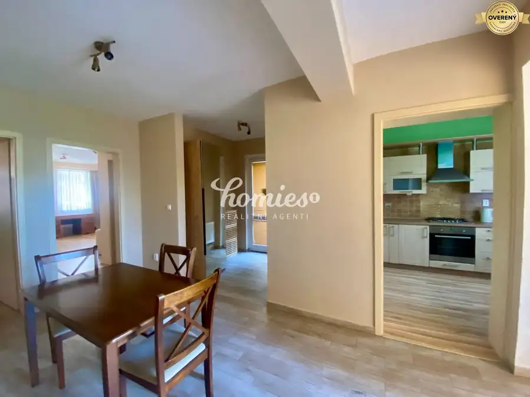

Aktuálna ponuka
Nehnuteľnosti, ktoré ponúkam
10 nehnuteľností na predaj a prenájom. Vyberte typ, alebo napíšte lokalitu.
10 z 10 ponúk

Byt10 1 200 €PRENÁJOM 3-izbový moderný byt s garážou, a terasou, Nitra - centrum Nitra 4-izbový89 m²3. podlažie 3. podlažie, veľká terasa, úplné centrum, výhľadom na mesto Dispozícia bytu: vstupná chodba, 2 spálne, kúpelňa, kuchyňa spojená s obývacou izbou, z…
Byt10 1 000 €PRENÁJOM 3 izbový luxusný byt s parkovaním, záhradou, centrum Nitra 3-izbový100 m²1. podlažie Prenájom luxusný 3 izbový byt priamo v centre mesta, parkovanie, klimatizácia Nadštandardný byt v rodinnom dome s 2 bytmi a samostatným dvorom.,…
Byt10 1 300 €PRENÁJOM výnimočný 3 izbový luxusný byt v centre Nitry, terasa Nitra 3-izbový117 m²3. podlažie 3. poschodie, veľká terasa s výhľadom na Svätoplukovo námestie Klimatizácia, GARÁŽ Veľkoryso riešený 3-izbový byt s priestrannou kuchyňou spojenou s…
Byt10 1 300 €PRENÁJOM 4 izbový nadštandardný byt s veľkou terasou v centre Nitry Nitra 4-izbový150 m²3. podlažie Výnimočný byt, 3. podlažie, garáž, 3 izby, veľká terasa Priestranná obývacia izba s kuchyňou, dve spálne, pracovňa, kúpelňa so sprchovým kútom aj s…
Rodinné domy10 Cena dohodouPREDAJ Rodinný dom s veľkým pozemkom, garážou a záhradou Lužianky 4-izbový181 m² Hľadáte rodinný dom, do ktorého sa môžete ihneď nasťahovať bez ďalších investícií? Ponúkame na predaj priestranný rodinný dom v obľúbenej obci…
Byt10 Cena dohodouPRENÁJOM priestranný 3 izbový byt v rod. dome, Zobor, klimatizácia Nitra 3-izbový100 m²1. podlažie Prenájom samostatného bytu v rodinnom dome 1. poschodie, 100 m2, klimatizácia v každej miestnosti], terasa Byt sa nachádza v rodinnom dome s dvoma…
Byt10 Cena dohodouPRENÁJOM veľký 3izb. príjemný mestský byt v centre, klimatizácia Nitra 3-izbový81 m²3. podlažie Byt je po rekonštrukcii, nová klimatizácia Dispozícia bytu: vstupná chodba, samostatná kuchyňa, obývacia izba, 2 samostatné izby, obývacia izba,…
Nebytové priestory6 Cena dohodouPRENÁJOM reprezentatívnych administratívnych priestorov, Nitra-centrum Nitra 100 m²1. podlažie - Rôzne veľkosti priestorov – prispôsobené Vašim potrebám - Možnosť prenájmu garáže a parkovacích miest - Plne vybavená kuchynka a sociálne zázemie -…
Ostatné Cena dohodouPRENÁJOM parkovacieho miesta - Chrenová Nitra 12 m² Ponúkame na prenájom označené súkromné parkovacie miesto nachádzajúce sa priamo pred bytovým domom ZipCity. Miesto je dobre viditeľné, pohodlne…
Nebytové priestory10 Cena dohodouPRENÁJOM 2 samost. miestnosti plus zázemie, centrum - Kalvária Nitra 2-izbový78 m² Prízemie Samostatný priestor so samostatným vstupom v dome s možnosťou využívať záhradu KLIMATIZÁCIA Dispozícia bytu: samostatná kuchyňa, dve izby,…Tomuto výberu zatiaľ nezodpovedá žiadna ponuka. Napíšte mi, čo hľadáte.